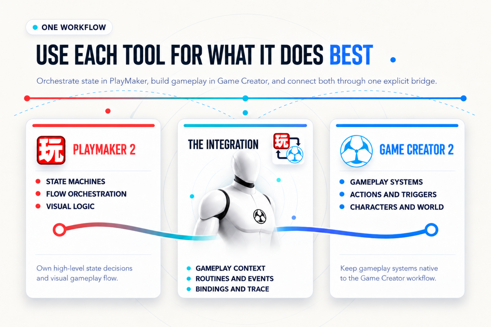

FSMs & GC2 Visual Scripting#
PlayMaker describes behavior through states, transitions, and events. Game Creator 2 describes gameplay through Triggers, Conditions, Instructions, Properties, and Variables. The integration lets these models cooperate without converting one graph into the other.
Divide Responsibilities#
| Responsibility | Recommended owner | Connection |
|---|---|---|
| Durable modes: closed, opening, open | PlayMaker | GC2 sends an event; the FSM decides the transition. |
| Gameplay sequence: move, animate, play sound | GC2 Actions | A PlayMaker state runs the component and optionally waits. |
| A reusable FSM operation | Gameplay Routine / callable FSM | GC2 maps inputs, waits, then reads outputs. |
| A gameplay value | One chosen store | Explicit reads/writes or configured binding. |
| A notification | The system producing the change | An event or Signal informs the receiver. |

Resolve the Right FSM#
Ordinary bridge targets combine a GameObject and FSM Name. Blank names match every FSM on that object and succeed only if there is one match. A supplied name must identify exactly one component. Missing or duplicate matches fail diagnostically.
Dedicated Get First FSM and Get First FSM By Name search utilities deliberately offer first-match behavior. Use those only when that is the policy you intend. They do not change the strict rule used by normal targets.
Prefer full state paths in hierarchical or parallel graphs. Two states with the same short name need different identities; the active-state Condition exposes a full-path option.
Map Self and Target#
| Call site | Default Self / Invoker | Default Target |
|---|---|---|
Run GC2 Actions |
PlayMaker FSM owner | GameObject containing the referenced Actions component |
Inline Run GC2 Instructions through Gc2Context |
PlayMaker FSM owner | None |
| GC2 → PlayMaker Instruction | Incoming GC2 Args | Selected FSM owner, evaluated from the target property |
An enemy FSM can invoke Actions on a shared routine object while targeting the player explicitly. Do not assume the object executing gameplay is the object being affected.
The PlayMaker GC2 Context Provider supplies reusable gameplay context slots. When an action uses ContextProvider, configure the selected slot rather than duplicating object references. Gc2Context supports FSM owner, explicit objects, GC2 target properties, and provider-based resolution as appropriate to Self or Target.
Wait and Complete Deliberately#
Wait Until Complete keeps an action alive while GC2 performs the task. Turning it off detaches execution: the action finishes immediately while GC2 continues. A completed action alone does not choose a new FSM state; author the event or FINISHED transition.
An already-running Actions component uses Reject or Join. Reject leaves it unchanged; Join observes without taking ownership. A joining caller cannot cancel that run on exit.
Cancellation is cooperative. A waiting action that owns a run can request cancellation on exit, but an Instruction must observe GC2's cancellation boundary before it stops. See PlayMaker → GC2.
Time and Pause#
Waiting and polling operations expose Scaled and Unscaled time where supported. Choose Unscaled when a deadline must advance at Time.timeScale == 0. This affects the bridge's clock; it does not make every Instruction inside the routine ignore scaled time.
Keep Data Ownership Clear#
A direct read/write is a single transfer. Adding a Property Binder enables a separate synchronization workflow with configured direction and timing. Neither mechanism combines save systems. See Variables & Property Binder.